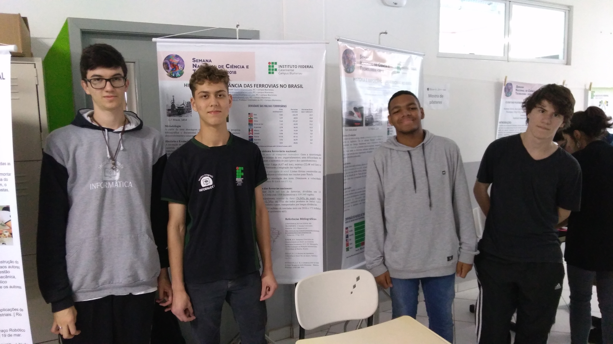

Sobre o projeto
Os alunos do Instituto Federal Catarinense Campus Blumenau do curso 102 informática Alisson, Gustavo Martins, Kauan e Vítor com o auxilio de Carlos Pateis e Manuela Helena realizaram através da disciplina de Projeto Integrador uma pesquisa sobre a importância dos trens.
Os principais temas abordados foram: história das ferrovias, importância econômica, contexto ferroviário brasileiro e mundial, comparação entre meios os meios de transporte rodoviário e ferroviário e o contexto catarinense das rodovias.

A pesquisa foi exposta na SNCT 2018, que ocorreu no IFSC Gaspar na modalidade de pôster. Através da exposição, foi possível apresentar a pesquisa feita, além de informar a comunidade.
O foco do projeto agora é realizar mais estudos para explorar a possibilidade de movimentar os trens através de energia solar, além da disseminação do projeto através do nosso website.
Metodologia do projeto
A pesquisa foi feita com o uso de artigos e monografias a respeito do desenvolvimento das ferrovias de carga no Brasil, assim como o auxílio de livros históricos e acadêmicos, com os diferentes pontos de vista. Os dados utilizados nas tabelas foram retirados majoritariamente de órgãos públicos como a ANTF, ANTT e a CNT.
Sobre as ferrovias

As ferrovias são como o nome sugere, caminhos de ferro. Eles são guias para os trens, os quais por conta do traçado fixo, podem mover-se com grandes cargas carregadas nos vagões. Por sua vez, esses vagões são puxados por uma ou mais locomotivas, a cabeça do trem. Normalmente o que move uma locomotiva é um motor de diesel ou um sistema de trilhos eletrificados. Sendo assim, os trens são um meio de transporte ideais para o transporte de cargas ou passageiros, e para esse último caso podemos subdivir o transporte entre intermunicipais e municipais, além de classificá-los como trens (fora da terra) e metros (dentro da terra).
As ferrovias são um dos meios de transporte mais importantes da atualidade, por serem seguros e eficientes. Elas foram frutos da primeira revolução industrial e desde então acompanharam o desenvolvimento de novas tecnologias até espalharam-se ao redor do mundo e estarem assim presentes tanto no transporte de passageiros quanto paro fins comerciais transportando cargas. Os trens balas são talvez o melhor exemplo dessa evolução, pois permite um deslocamento de passageiros a velocidades acima de 300km/h
Ao redor do mundo as ferrovias transformaram-se em expoentes em suas economias, ganhando assim, mais espaço em relação a outros meios de transporte, por serem eficientes no deslocamento de produtos com baixo valor agregado e grande peso por longas distancias. Além disso, as locomotivas ganharam novas tecnologias que acompanharam a expansão dos outros meios de trasporte, tal como os carros e ganharam cada um seu lugar no setor do transporte (os trens são ideias para longos traçados).
Ao contrário de grandes economias que possuem densas malhas ferroviárias que colaboram para uma economia saudável, o Brasil apresenta inúmeros gargalos originários da má administração durante o período imperial e posteriormente nas estatizações quando se optou majoritariamente pelo modal rodoviário. Atualmente o foco do governo é a recuperação do atraso delas mesmo com o investimento escasso e da curiosa utilização quase exclusiva delas para transportar minério de ferro.
Dito isto, podemos dizer que os trens são uma parte essencial de qualquer país e são bons indicadores de seu desenvolvimento. Tendo isso em vista, estudar o papel dele no Brasil e no mundo, bem como analisar suas características e atributos únicos justifica a existencia e importância do projeto desenvolvido.